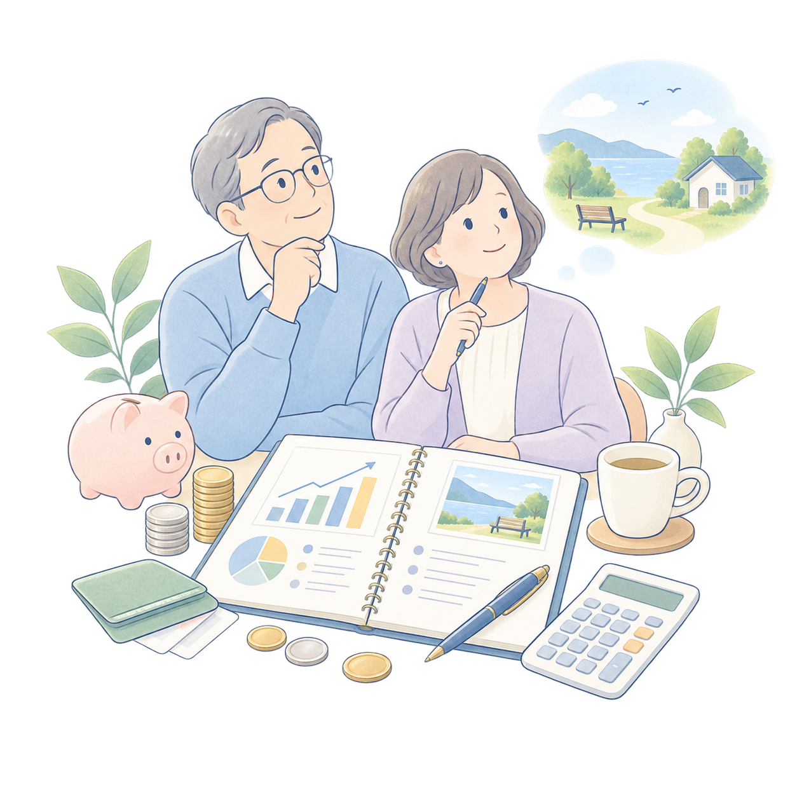
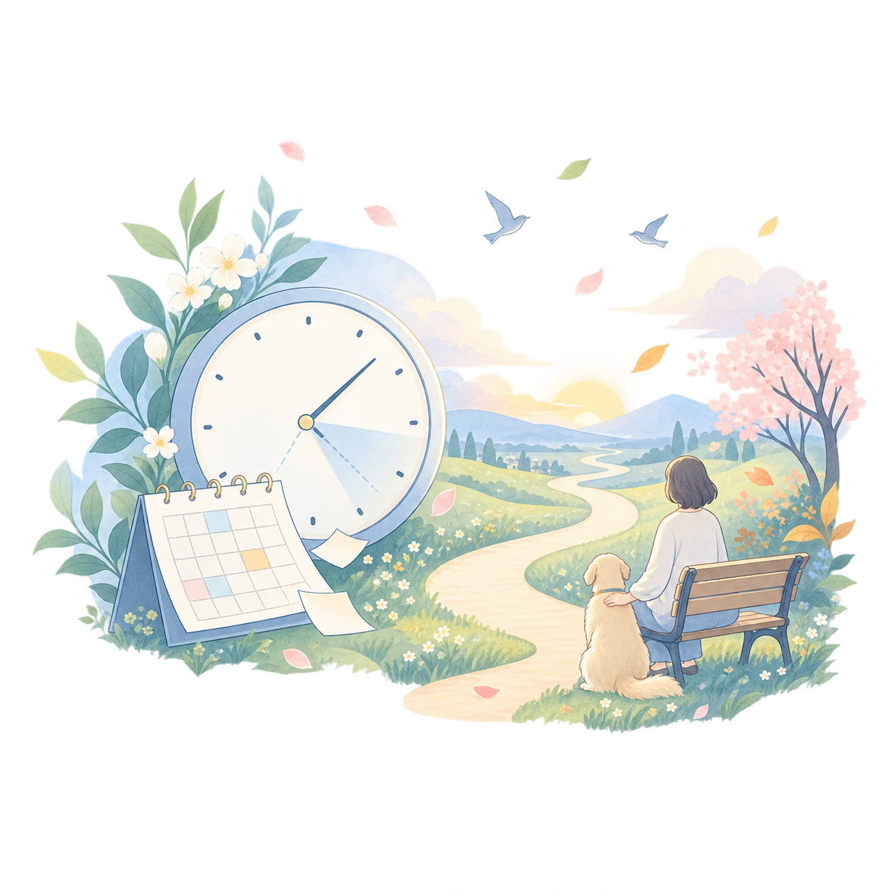
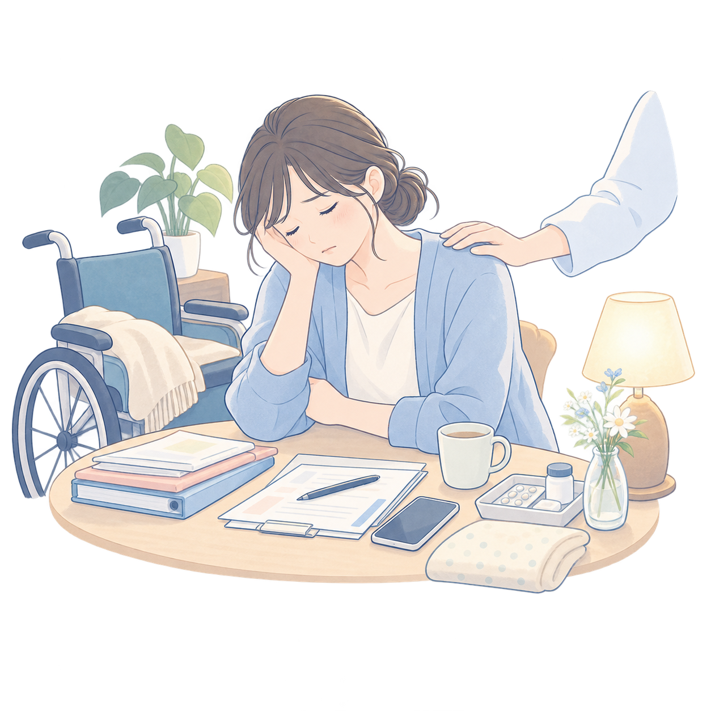

PICK UP
ちょっと気になるところから。
気になったものを、ひとつ見ていく。
状況から探す
いま、こんなことで困っていませんか？
医療用語が分からなくても大丈夫です。いま頭の中にある悩みに近いものから入ってください。
認知症・もの忘れ認知症かもしれない。
介護が始まりそう。
家でみる？
治療を、どこまで
老後資金・医療介護費老後のお金、
経過・見通しあと、どれくらい
介護負担・レスパイト介護がつらい。
ひとりで老後を
認知症かもしれない。
どうしたらいい？
認知症の入口へ→
介護のはじまり・準備介護が始まりそう。
何からすればいい？
介護が始まる前の入口へ→
住まい・退院先家でみる？
施設に入る？
住まい・退院先へ→
治療・緩和・意思決定治療を、どこまで
続ける？
医療・治療の選択へ→

老後のお金、
足りる？
老後資金を試算する→

あと、どれくらい
なんだろう？
見通し・経過へ→

介護がつらい。
もう無理かもしれない
介護負担を減らす入口へ→
ひとり暮らし・身寄りひとりで老後を
迎えるのが不安
ひとり暮らし・身寄りの支援へ→
入口は「病名」ではなく、実際に困っている言葉から。中に入ると医療・介護・制度・体験談へ整理してつなぎます。
3つの入口
知る・考える・体験を見る
病気の経過を知る、治療やケアを考える、実際の体験を読む。目的に近い入口からどうぞ。
このサイトの使い方
答えを押しつけるのではなく、必要な情報へ進むための道順をつくります。
1｜状況を整理する今の困りごとや状況を言葉にします。
2｜経過を知る病気の経過や、これから起こりうる変化を知ります。
3｜選択が生まれる場所を知るどのタイミングで、どんな選択があるのかを見ます。
4｜選択を考える本人の価値観や希望、支える人の状況を整理します。
5｜信頼できる情報へ必要に応じて公的機関や専門情報につなぎます。
医学的な判断や治療の決定は、必ず医師や専門職と相談のうえで行ってください。
信頼できる医療情報を探す
公的機関や専門機関など、さらに詳しい情報へつなぎます。
この図鑑が目指していること
「何を調べればいいのか分からない」というところから、病気の経過、選択、本人の価値観、そして信頼できる専門情報へ。必要な人が必要な情報にたどり着ける道しるべをつくります。